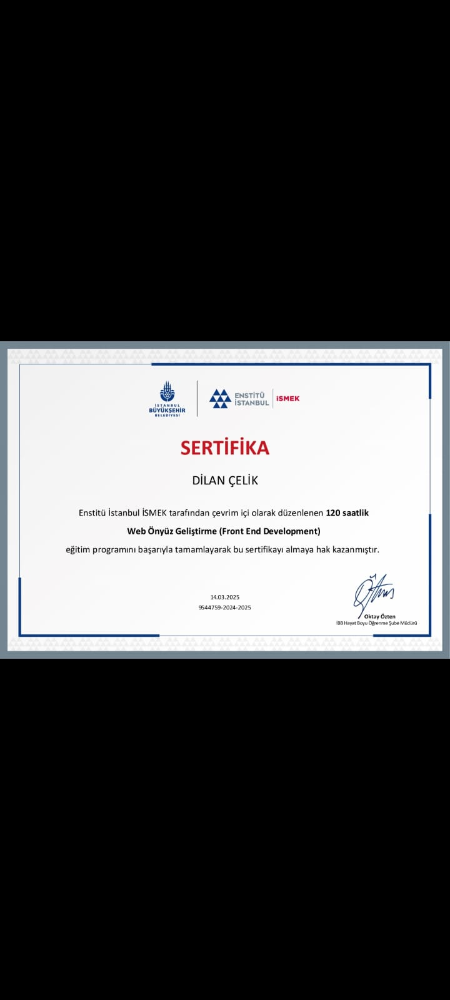

Web Development
Modern web geliştirme temelleri ve uygulamaları
Kimim ve nasıl çalışırım?
Merhaba, ben Dilan Çelik. Bilgisayar ve kodlama alanında lise eğitimi aldım; sonrasında kendimi web teknolojileri üzerine yoğunlaştırarak sürekli geliştirdim.
Kullanıcı deneyimini önceleyen, erişilebilir ve mobil uyumlu arayüzler tasarlayıp geliştiriyorum. Fikirleri net, sürdürülebilir ve performanslı web ürünlerine dönüştürmeye odaklanıyorum.
Web Tasarımı
Arayüz Geliştirme
Mobil Uyumluluk
Görsel Tutarlılık
Konum
İstanbul, Türkiye
Odak
Front-End
Deneyim
3+ yıl
Çalışma
Freelance / Uzaktan
Kullandığım teknolojiler

Güncel web standartlarına uygun, performanslı ve erişilebilir arayüzler geliştiriyorum. Temel odağım; sağlam HTML yapısı, modern CSS ve etkileşimli JavaScript deneyimleridir.
Öğrenme ve üretim yolculuğum
Lise Eğitimi
Yazılım temelleri, algoritma mantığı ve web teknolojilerine giriş.
Sürekli Gelişim
Modern front-end araçları, UI pratikleri ve proje odaklı öğrenme.
Front-End
Çok sayıda web sitesi ve mini uygulama geliştirerek responsive tasarım, bileşen yapısı ve kullanıcı deneyimi konularında pratik kazandım.
Portföy
Kurumsal tanıtım siteleri, tematik içerik siteleri ve JavaScript tabanlı uygulamalar.
Belgelendirilmiş yetkinlikler
Modern web geliştirme temelleri ve uygulamaları

JavaScript ile etkileşimli arayüz geliştirme

Kullanıcı arayüzü ve deneyim tasarımı prensipleri
Seçilmiş çalışmalar ve canlı demolar
Toplam 67 proje: 58 web sitesi ve 9 JavaScript uygulaması. Başta 6 proje gösterilir; tümünü görmek için “Daha Fazla Göster” düğmesine tıklayın.
Birlikte çalışalım